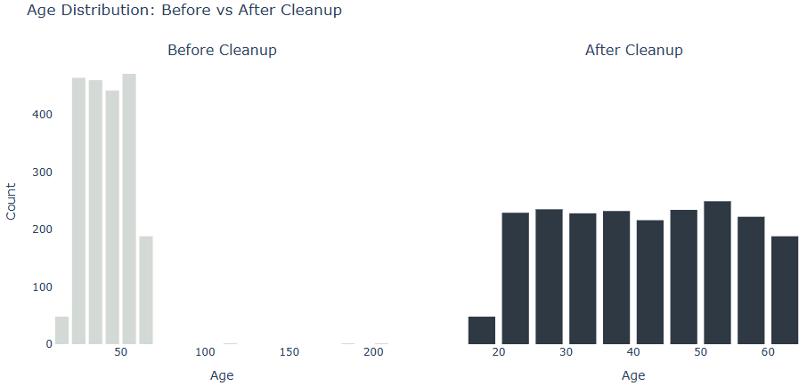

Part 1: ETL Pipeline
From messy to model-ready
Real-world data is lumpy. This pipeline turns raw member records into tidy, trustworthy tables ready for analysis and modeling by validating, deduping, and standardizing along the way.
View full notebook on GitHub
TL;DR
- Context: messy member data across sources.
- Role: built the end-to-end pipeline to ingest, validate, then normalize.
- Approach: standardized referral sources so channels get the right credit; fixed impossible ages with demographic-based estimates; normalized binary & categorical fields; incremental loads with audit logs; one canonical table.
- Result: model-ready, rerunnable, defensible data. Dashboards and models read the same source of truth.
- Tech: SQL Server, Python (pandas), scheduled runs.
Data at a Glance
A synthetic dataset was created to protect privacy and provide a realistic representation of real-world challenges. It captures behavioral and demographic data on 2,081 unique fitness studio members across 9 distinct studio locations, including referral sources, studio regions, and member engagement signals.
What This Pipeline Delivers
- Standardizes messy referral sources so each channel gets the right credit.
- Fixes unrealistic ages using demographic-based estimates.
- Makes binary and category fields ML-friendly and consistent.
- Outputs a clean dataset for dashboards, models, and strategy decisions
Key Fixes & Validations
The following sections detail the Python code used to standardize and ensure clean, consistent inputs.
Inconsistent Referral Data
Solution: Referral Source Cleanup
One of the most inconsistent fields in the raw data was referral_source, likely due to human error. It was filled with typos, irregular formatting, and redundant variations of the same label.
Messy Raw Inputs
print(df_members['referral_source'].sort_values().unique())
['Com. Event' 'Community Event' 'CommunityEvent' 'Empl Program'
'Employer Prgrm' 'Employer Program' 'Frend' 'Friend' 'Online Ad'
'OnlineAd' 'Onlne Ad' 'Other' 'Othr' 'Partner Ship' 'Partnership'
'Partnrship' 'Soc. Media' 'Social Media' 'SocialMedia' 'WALK-IN'
'Walk in' 'Walk-in' 'friend' 'frnd' 'onlinead' 'othr' 'soc media'
'walkin']
Standardization Logic
referral_mapping = {
'walkin': 'Walk-in', 'Walk in': 'Walk-in', 'WALK-IN': 'Walk-in', 'Walk-in': 'Walk-in',
'friend': 'Friend', 'Friend': 'Friend', 'Frend': 'Friend', 'frnd': 'Friend',
'OnlineAd': 'Online Ad', 'onlinead': 'Online Ad', 'Onlne Ad': 'Online Ad',
'SocialMedia': 'Social Media', 'Soc. Media': 'Social Media', 'soc media': 'Social Media',
'Partnrship': 'Partnership', 'Partner Ship': 'Partnership',
'Employer Prgrm': 'Employer Program', 'Empl Program': 'Employer Program',
'Com. Event': 'Community Event', 'CommunityEvent': 'Community Event',
'othr': 'Other', 'Othr': 'Other'
}
df_members['referral_source'] = df_members['referral_source'].replace(referral_mapping)
After Cleanup
print(df_members['referral_source'].sort_values().unique())
['Community Event' 'Employer Program' 'Friend' 'Online Ad' 'Other'
'Partnership' 'Social Media' 'Walk-in']
Demographic Outliers
Solution: Addressing Unrealistic Age Values
Age values under 10 or over 100 were deemed data entry issues and replaced with median age values by cohort.
{kind=link}
Final Output
The pipeline produces fitness_studio_clean.csv for downstream machine
learning.
Optional: Load Data to Snowflake Warehouse
Using the native snowflake.connector and write_pandas(), cleaned data is available to be loaded into
Snowflake through a single, persistent connection. Credentials are securely managed via a hidden .env file
to protect sensitive information, enabling efficient bulk uploads and proper session management.
Credential Setup
import snowflake.connector
from snowflake.connector.pandas_tools import write_pandas
from dotenv import load_dotenv
import os
load_dotenv()
user = os.getenv("SNOWFLAKE_USER")
password = os.getenv("SNOWFLAKE_PASSWORD")
account = os.getenv("SNOWFLAKE_ACCOUNT")
warehouse = os.getenv("SNOWFLAKE_WAREHOUSE")
database = os.getenv("SNOWFLAKE_DATABASE")
schema = os.getenv("SNOWFLAKE_SCHEMA")
role = os.getenv("SNOWFLAKE_ROLE")
Build Connection Using .env Credentials
conn = snowflake.connector.connect(
user = user,
password = password,
account = account,
warehouse = warehouse,
database = database,
schema = schema,
role = role
)
cur = conn.cursor()
Define table Data Definition Language (DDLs)
This step uses CREATE OR REPLACE TABLE statements to explicitly define the schema for each table (in this case TBL_FITNESS_STUDIO_CHURN derived from the fitness_studio_clean.csv export).
Predefining these structures ensures data integrity, consistent data types, and prepares the Snowflake environment for efficient, scalable bulk data ingestion. While the example shown handles one table, the approach supports multi-table loads across the entire fitness studio dataset.
# define table DDLs
ddl_statements = {
'TBL_FITNESS_STUDIO_CHURN': '''
CREATE OR REPLACE TABLE TBL_FITNESS_STUDIO_CHURN (
MEMBER_ID STRING PRIMARY KEY,
ENGAGEMENT_SCORE INT,
HOME_STUDIO_REGION STRING,
GENDER STRING,
AGE FLOAT,
MEMBERSHIP_TENURE_MONTHS INT,
AVG_WEEKLY_CLASSES_LAST_6_MONTHS FLOAT,
NUM_UNIQUE_CLASS_TYPES_ATTENDED INT,
AUTO_RENEW_ENABLED INT,
LAST_ATTENDED_30_DAYS_FLAG INT,
MONTHLY_MEMBERSHIP_COST INT,
REFERRAL_SOURCE STRING,
IS_CHURNED INT
STUDIO_NAME STRING,
STUDIO_ID STRING,
ADDRESS_FULL STRING
);
'''
}
Local Dataframe References
# local dataframe references
dataframes = {
'TBL_FITNESS_STUDIO_CHURN': df_members
}
Loop Through Each Table to Create and Load
# loop through each table to create and load
for table_name, ddl in ddl_statements.items():
try:
cur.execute(ddl)
print(f"Success: Table {table_name} created.")
except Exception as e:
print(f"*Error*: Failed to create {table_name}: {e}")
try:
success, nchunks, nrows, _ = write_pandas(conn, dataframes[table_name], table_name)
print(f"Success: Loaded {nrows} rows into {table_name}")
except Exception as e:
print(f"*Error*: Failed to load data into {table_name}: {e}")
Ensuring Reliable Insights from the Start
Because data rarely arrives clean, the success of any analytics project hinges on the quality of its inputs. This pipeline validates, cleans, and structures data at the source to ensure all downstream decisions are built on a trustworthy foundation.
Up Next: Part 2 - Churn Exploratory Data Analysis (EDA)
With the data now cleaned, the project moves into exploration. The EDA phase reveals early signs of churn such as low engagement, short membership tenures, and inconsistent behavior.
Project Home Part 2: Churn EDA